Version 1.0 · 29 septembre 2026 · Cotonou. Structurée selon les chartes internationales et adossée aux normes citées à chaque chapitre. Le code du dépôt reste la source de vérité ; ce document en est la lecture pour les humains.
docs/marque/charte-graphique.md. Les deux disent la même chose ; en cas d'écart, le dépôt tranche et les deux se corrigent.Qu'une pièce signée MND, où qu'elle paraisse, soit reconnue au premier regard et tienne la même promesse : sobriété, netteté, chaleur.
Portée. Le portail, Le Trône, Ma Couronne, La Consultation, LOKAA, le Certificat, le Bilan, le Bulletin, le site public, les PDF, les affiches, l'enseigne et le tampon, les messages WhatsApp et e-mails, y compris ceux que l'IA rédige.
Ce qui prime. En cas de contradiction entre ce document et le dépôt, le dépôt gagne, et ce document se corrige. Les règles non négociables du CLAUDE.md le restent ici.
| Domaine | Référence | Ce qu'on en retient |
|---|---|---|
| Couleur écran | IEC 61966-2-1 (sRGB) | Toutes les valeurs HEX et RGB sont sRGB. |
| Couleur imprimée | ISO 12647-2, ISO 12647-7, ISO 15076-1 (ICC), PSO Coated v3 | Les CMJN sont des valeurs de départ ; la référence se valide sur épreuve contractuelle. |
| Observation | ISO 3664:2009 | Les couleurs se jugent sous D50, jamais sous un néon ni sur un écran non calibré. |
| Papier | ISO 216 | A4 portrait pour la papeterie, A4 paysage pour le certificat, A6 ou 85 × 55 mm pour les cartes. |
| ISO 32000, ISO 19005 (PDF/A) | Pièces d'archive en PDF/A-2b, polices embarquées. | |
| Accessibilité | WCAG 2.2 AA (la 2.0 est ISO/IEC 40500:2012), EN 301 549 | 4,5:1 pour le texte, 3:1 pour les composants, cibles de 24 px, mouvement réduit respecté. |
| Ergonomie | ISO 9241-210, ISO 9241-112 | Conception centrée sur la cliente, téléphone d'abord. |
| Caractères | Unicode (ISO/IEC 10646), NFC | Les lettres fon sont des caractères, jamais des substituts. |
| Codes | ISO 639, ISO 3166-1, ISO 4217, ISO 8601 | Codes dans les données ; français de la Maison à l'affichage. |
| Typographie française | Lexique de l'Imprimerie nationale | Espaces insécables, guillemets à chevrons, nombres par trois. |
| Polices | SIL Open Font License 1.1 | Cormorant Garamond, Jost, EB Garamond : embarquement et usage commercial autorisés. |
| Icônes d'app | W3C Web Application Manifest | Pictogramme dans la zone sûre de 80 % des icônes maskables. |
La marque s'écrit MND, trois capitales, sans point. Le nom complet est Maison MND ; il se tient seul, en entête, en signature, en pied. Il ne s'insère pas au milieu d'une phrase : on écrit « La Maison pense à vous ».
« L'atelier MND » est l'ancien nom de la marque mère ; il survit comme sous-marque des branches. La ligne légale vient de shared/identite.ts et ne se recopie jamais. La ville qui signe est Cotonou, le siège.
« · » est le seul séparateur entre deux éléments de même rang sur une ligne : « SÍNSÍN™ · La Reprise », « Cotonou · GMT+1 ». Jamais de puce « • », jamais de barre « | ». Il ne remplace jamais une phrase.
Le ɖ n'appartient qu'à la devise : il n'entre jamais dans « MND ». Les lettres fon ne se translittèrent jamais ; « mi nyo dekpe » est une faute. Une seule source : DEVISE_COMPLETE.
Tout message écrit par l'IA se termine par la signature, posée par le code et une seule fois. En texte : « ◈ Maison MND · mi nyɔ́ ɖɛkpɛ, et vous le savez ». Sur le papier, nom et devise dans la même main, centrés au pied.
Couché (principal) : pictogramme à gauche, MAISON au-dessus de MND. En-têtes, barre du site, bandeaux, signatures.
Debout : les trois pièces l'une sous l'autre. Enseigne, tampon, format carré, photo de profil.
Le pictogramme est composé, jamais redessiné : les SVG du dépôt sont la seule source. Seules opérations permises : le détourage et la mise à l'échelle uniforme. Son rapport largeur/hauteur vaut 1,211 ; le fabricant refuse de livrer au-delà d'un centième d'écart. Les proportions du verrou sont écrites une seule fois, dans src/ds/verrou.ts : MAISON à 42/132 du corps du sigle, écartement 0,44 em contre 0,30 em pour MND, pictogramme 1,10 fois la hauteur du bloc en couché.
Rien n'approche à moins de X, la hauteur de capitale du sigle MND. À l'écran, 24 px est le minimum absolu.
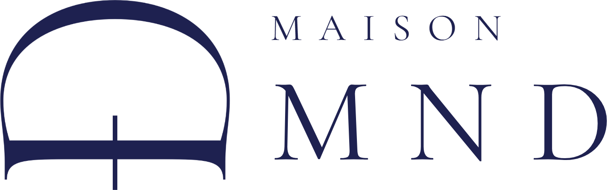
couché · 123 px · 33 mm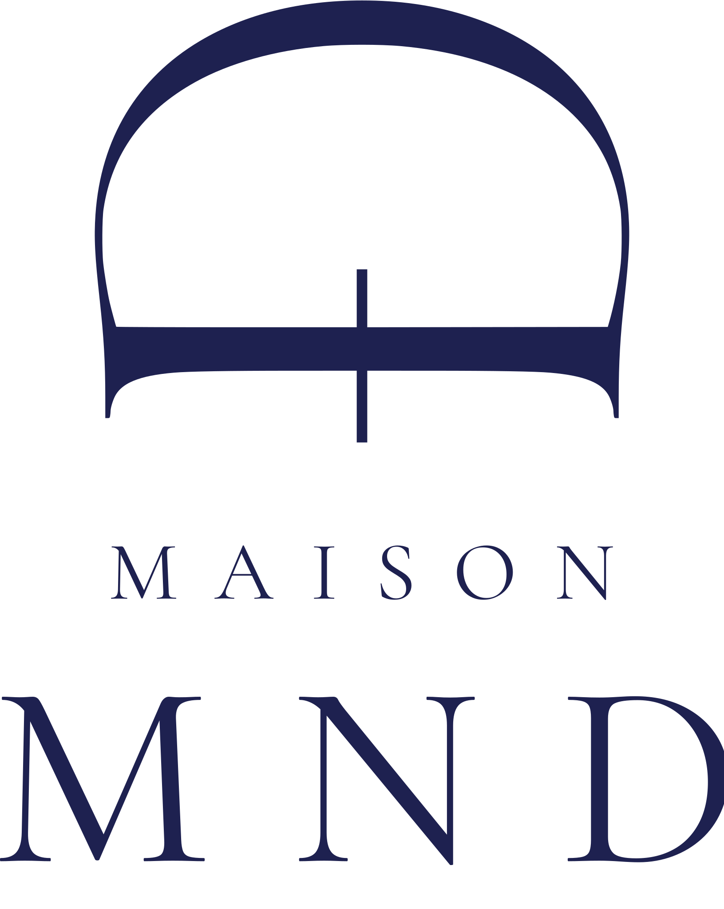
debout · 64 px · 17 mm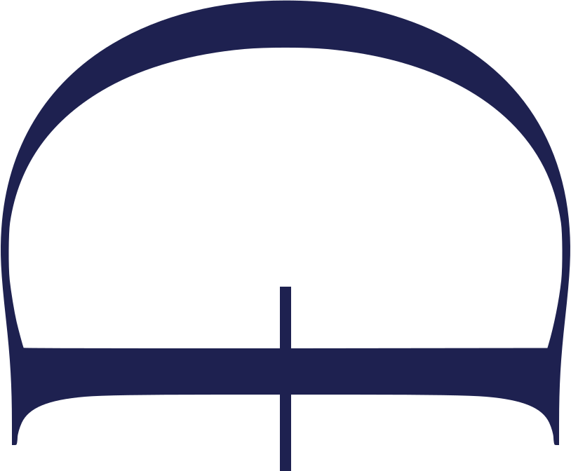
sous le plancher : pictogramme seulOn réduit jusqu'à ce que la capitale de MAISON tombe sous six pixels : à 123 px le couché tient, à 122 il ne tient plus. Sous le plancher on ne rapetisse pas : on pose le pictogramme seul, et le nom se lit ailleurs.
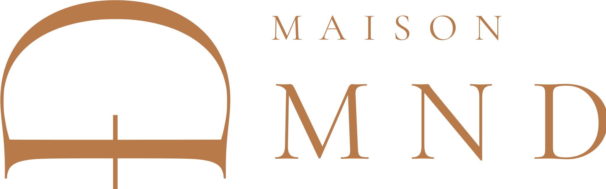
| Fond | Verrou |
|---|---|
| Ivoire, sable, argile, papier blanc | Indigo Royal par défaut. Cuivre admis pour une pièce non administrative (carte, invitation). |
| Indigo, indigo profond, aplat d'une sous-marque | Ivoire, sigle compris : c'est le fond qui porte la teinte. |
| Photo | Ivoire sur un voile sombre, jamais à nu sur une zone chargée. |
| Dégradé des Événements | Sur le début du bain, côté indigo : l'ivoire y tient 8,1:1, contre 3,1:1 à l'autre bout. |
L'encre des pièces administratives est l'indigo : un tampon de 34 mm n'est presque que de petites lettres, l'indigo survit à la photocopie là où le cuivre part en gris, et le monogramme cuivre ouvre déjà le papier, l'indigo le ferme.
Le mot du métier prend la place de MAISON, au-dessus ; MND reste la grande ligne, et reste indigo. Une sous-marque n'est pas un autre logo : c'est le même, avec un mot échangé et une couleur à elle.
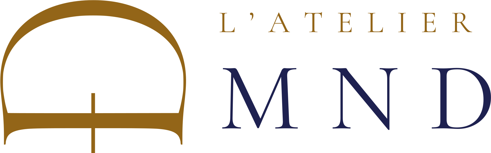
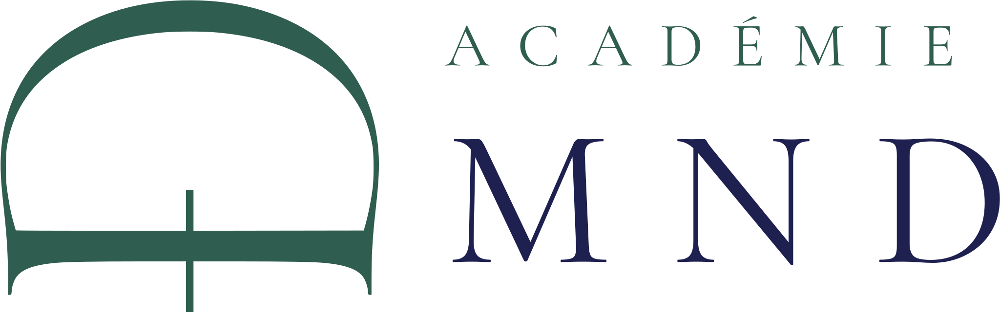
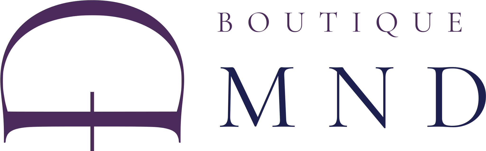
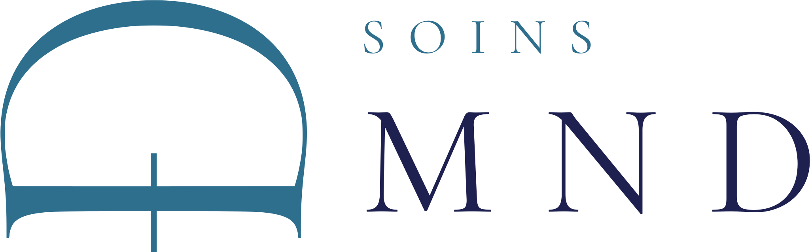
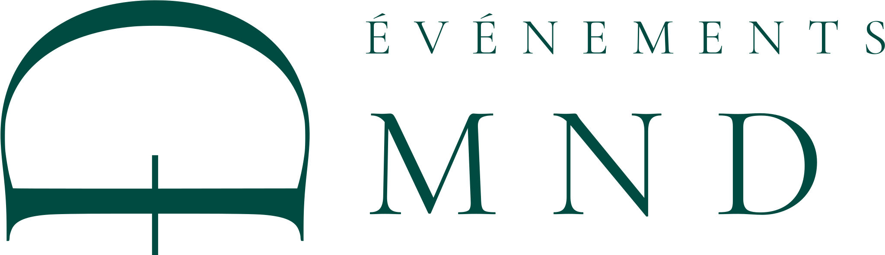
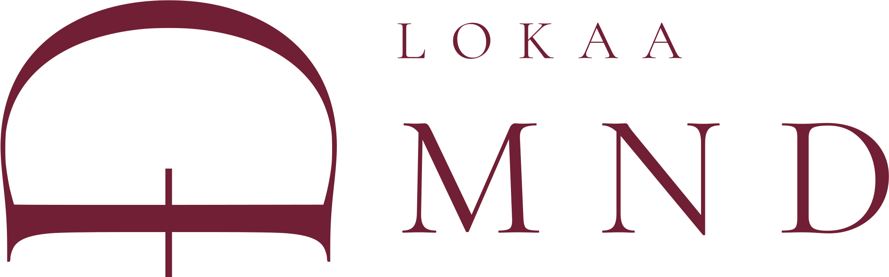
| Sous-marque | Vocation | Signature |
|---|---|---|
| Maison MND | la marque mère, le salon d'Akpakpa | mi nyɔ́ ɖɛkpɛ, et vous le savez |
| L'Atelier MND | les branches, d'une ville à l'autre | Ouvrir. Porter. Essaimer. |
| Académie MND | formations, certifications, transmission | Former. Transmettre. Affirmer. |
| Boutique MND | produits, outils, objets | Choisir. Entretenir. Durer. |
| Soins MND | routines, cuir chevelu, entretien | Nourrir. Apaiser. Fortifier. |
| Événements MND | ateliers, rencontres, défilés, lancements | Rassembler. Parer. Célébrer. |
| Studio MND | portraits, contenu, éditorial | Cadrer. Révéler. Garder. |
| LOKAA by MND | offre entreprise, logiciel pour salons | Équiper. Servir. Grandir. |
Option A · Souverain : tout vient de la palette. #1E2150 → #1F4D62 → #6E283C → #B97A4A.
Option B · Vif : pour l'affiche ou l'écran vus de loin. #1E2150 → #5B3FA6 → #C2306E → #E8683A → #E9844C. Le verrou se pose sur le début du bain, jamais sur sa fin.
Aucune couleur hors de ce système n'est autorisée. Valeurs sRGB, celles de src/ds/tokens/colors.css.
--grad-indigo et les bains des Événements. Les voiles sur photo protègent le texte, ils n'ornent pas.L'or vit à deux endroits : le sceau du Trône et le site public révélateur, dont la palette est or, crème #FBF7F0, terre #3D2B1F et l'indigo de la Maison. Sur le site l'or est l'accent ; il tient 6,6:1 sur indigo et 2,1:1 sur crème : jamais du texte courant, et les petits textes dorés prennent l'or profond (5,3:1). Les cinq applications gardent indigo et cuivre. Or et cuivre ne se mélangent pas sur une même pièce.
Les CMJN de l'annexe B sont des conversions de départ. La teinte de référence s'établit sur épreuve contractuelle (ISO 12647-7), avec le profil de l'imprimeur (PSO Coated v3 sur couché, PSO Uncoated v3 sur non couché), sous D50. Les Pantone se lisent sur nuancier physique en regard de l'épreuve, puis s'inscrivent à l'annexe B. Fond perdu 3 mm, sécurité 5 mm, trait minimal 0,25 pt, texte minimal 7 pt en Jost, 8 pt en Cormorant, rien sous 10 pt en défonce ivoire sur indigo.
Titres, chiffres de tête, citations en italique, sigle MND. Le dessin Light (300) porte les grands titres ; au-dessous de 26 px on remonte à 400.
Corps de texte, labels, boutons, tableaux, données. Corps de 14 px à l'écran, 16 px sur le site public ; 10 à 11 pt sur le papier.
| Rôle | Police | Corps | Graisse | Interlignage | Interlettrage |
|---|---|---|---|---|---|
| Display | Cormorant | 64 à 128 px | 300 | 0,92 | −0,01 em |
| H1 / H2 / H3 | Cormorant | 46 à 74 / 34 à 50 / 26 à 34 px | 300 à 400 | 1,05 | −0,01 em |
| Citation | Cormorant italique | 24 à 38 px | 300 | 1,25 | 0 |
| Accroche / Corps / Petit | Jost | 18 / 14 / 13 px | 300 à 400 | 1,6 | 0 |
| Label, eyebrow | Jost capitales | 12 px | 500 à 600 | 1,25 | 0,26 em |
| Micro | Jost | 11 px (minimum absolu) | 400 | 1,4 | 0 |
| Sigle MND | Cormorant capitales | selon le verrou | 400 | 1 | 0,30 em (verrou) · 0,34 em (texte) |
Toute autre police est interdite, y compris dans un document bureautique ou une publication. Sans les polices de la Maison, on n'imite pas : Georgia et une grotesque système, et on le dit. Les fichiers sont servis depuis src/ds/fonts/, licence OFL 1.1 ; aucun hôte tiers, un harnais le refuse.
Ni Cormorant ni Jost ne portent ces lettres. EB Garamond les porte, et c'est une Garamond : la parenté rend l'emprunt invisible. À l'écran, unicode-range la restreint à ces sept points de code ; placée en tête des piles, elle ne prend rien aux polices de la Maison. Sur le papier, le TTF s'embarque dans le PDF et l'accent de « ɔ́ » se pose à la main, reculé de 0,219 em.
Les gestes s'écrivent avec leur marque, sans espace avant le ™ : VÈKPÈ™, SÍNSIN™, FÍNFÍN™, YÈKPÈ™, GBÀTÀ™, DÀNDÀN™, KLƆKLƆ™.
fmtMoney(), dans la devise de la branche.--weight-light vaut 400) : le « 300 » de la règle de marque désigne le dessin Light de Cormorant pour les grands titres, non le corps de texte.Module carré de 8 px. Tout espacement est un multiple de 4 : --space-1 4 px à --space-10 128 px. Les respirations éditoriales prennent 96 ou 128 px. Gouttière de 16 px sur téléphone.
| Token | Largeur | Emploi |
|---|---|---|
| narrow | 720 px | Prose, manifeste, lettres |
| text | 960 px | Pages de texte |
| wide | 1200 px | Tableaux, grilles |
| max | 1320 px | Limite absolue |
2 px pour les champs et puces, 4 px pour les cartes et boutons. Le seul cercle admis est le sceau ou le badge cerclé.
Je découvre mon parcours Prendre rendez-vous Je sais déjà
Un bouton dit ce que la lectrice obtient. Libellé Jost 600, 13 px ; hauteur 44 px pour le principal, 24 px minimum pour toute cible.
| Token | Valeur | Emploi |
|---|---|---|
| dur-fast | 140 ms | Survol, focus |
| dur-base | 240 ms | Volet, changement d'état |
| dur-slow | 420 ms | Entrée d'un écran |
| ease-soft | cubic-bezier(.22, .61, .36, 1) | Par défaut |
| ease-inout | cubic-bezier(.45, 0, .2, 1) | Aller-retour |
Le mouvement dit que quelque chose a changé ; il ne divertit pas. Interdits : rebond, élastique, rotation décorative, parallaxe, chargement qui tourne. prefers-reduced-motion coupe toute animation et toute transition, sans exception.
Un motif habille un fond, une couverture, un dos de carte, une seule fois par pièce, dans sa version aérée et à faible contraste. Le monogramme (le pictogramme en carré) ouvre les pièces imprimées en tête, en cuivre, et s'embarque compressé dans les PDF.
Les graphiques sont des SVG faits main : une seule série cuivre, les autres sur la rampe indigo (600, 400, 200), grille en hairline, axes en Jost 11 px.
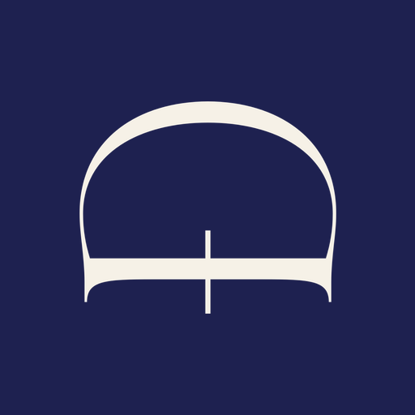
Portail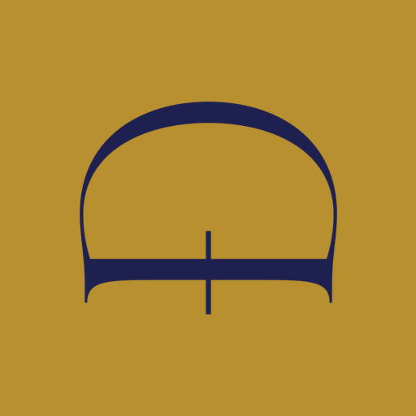
Trône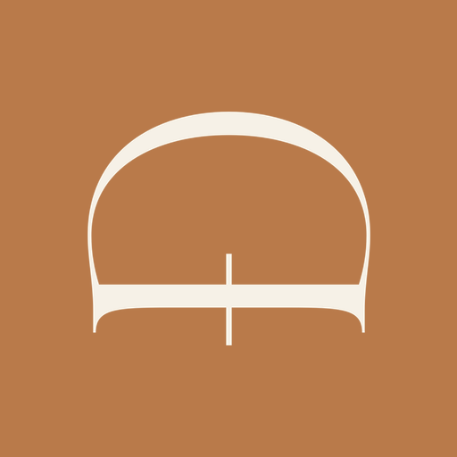
Couronne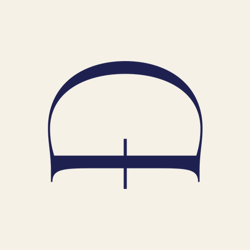
LOKAAIcônes d'application : pictogramme seul, centré, dans la zone sûre de 80 % de l'icône maskable. Icônes d'interface : traits de 1,5 px à bouts droits sur une grille de 24 px, en encre courante, remplies pour le seul état actif.
L'une des onze photographies existantes : lumière de jour, regard à hauteur d'yeux, fond calme.
Sept sensations : sécurité, confiance, expertise, élégance, intimité, prise en charge, transmission.
La lumière : naturelle, latérale, diffuse ; balance des blancs sur charte grise, réchauffée légèrement, jamais orangée ; on expose pour la peau. Les ombres existent et tirent vers l'indigo au traitement, jamais vers le noir bouché.
Les fonds : unis et mats, crème, lin, bois, terre, velours indigo. Pas de feuillage vert flou, pas de wax dominant, pas de miroir, chrome, néon ni mur de produits.
Ce qu'on refuse : l'esthétique de salon générique, les clichés de pose, les filtres et la peau lissée, les images générées, les banques d'images, le fond noir, la saturation « Instagram ».
Direction complète : docs/site-revelateur/direction-photo.md.
| Surface | Identité | Ce qui la distingue |
|---|---|---|
| Portail | Ivoire éditorial | Grandes respirations, Cormorant Display, une porte vers chaque sœur |
| Le Trône | Indigo et sceau | Barre latérale indigo, papier ivoire, chiffres en Cormorant, sceau or ; l'obsidienne y subsiste et ne s'étend pas |
| Ma Couronne | Ivoire chaud et cuivre | Cadre 390 × 844, un geste par écran, réservation en sept temps |
| La Consultation | Indigo profond cérémoniel | Écran plein indigo, ivoire pour le texte, cuivre pour le seul bouton |
| LOKAA | Neutre, accent du locataire | « Propulsé par MND » en pied |
| Certificat, Bilan, Bulletin | Papier pur | A4, monogramme cuivre en tête, pied avec la devise |
A4 portrait (ISO 216), A4 paysage pour le certificat ; marges 18 mm, 15 mm en pied. Tête : monogramme cuivre 13 mm, nom et ligne légale en Jost 9 pt, filet cuivre. Corps Jost 10 à 11 pt, titres Cormorant 24 à 36 pt, tableaux à filets indigo 1 px. Pied par pieDeLaMaison() ; verrou couché jamais sous 33 mm. Encre indigo pour l'administratif. Polices embarquées, images compressées : un reçu pèse moins de 200 Ko. Pièces d'archive en PDF/A-2b.
Tampon : verrou debout, indigo, 34 à 40 mm, MAISON MND en arc calculé sur la largeur réelle des glyphes, ville et RCCM en Jost 7 pt minimum. Enseigne : debout ivoire sur indigo ou indigo sur ivoire ; jamais de lettrage lumineux coloré ; capitale de MAISON d'au moins 15 mm à 10 m.
| Support | Format | Règle |
|---|---|---|
| Carré | 1080 × 1080 | Verrou en haut à gauche, au moins 240 px de large |
| Portrait | 1080 × 1350 | Texte dans les 4/5 supérieurs |
| Story, Reel | 1080 × 1920 | Zone sûre : 250 px haut, 340 px bas, 60 px côtés |
| Événement | selon le lieu | Bain A ou B, verrou ivoire sur le début |
Une affiche porte un eyebrow, un titre Cormorant, une phrase Jost, une action (code d'offre en toutes lettres, lien), le verrou. Rien d'autre.
Texte seul, français, sans émoji, un lien au plus. E-mail : styles en ligne, 600 px, monogramme en tête, devise en pied, repli Georgia et Arial. Signature posée par le code : « ◈ Maison MND · mi nyɔ́ ɖɛkpɛ, et vous le savez ».
| Exigence | Règle de la Maison | Où c'est tenu |
|---|---|---|
| Contraste du texte (1.4.3) | 4,5:1 ; le cuivre 500 n'est jamais du texte courant sur clair | Annexe A |
| Contraste des composants (1.4.11) | 3:1 pour bordures, icônes, filets porteurs de sens | Annexe A |
| Taille des cibles (2.5.8) | 24 × 24 px minimum, 44 px pour les boutons principaux | mnd-btn |
| Focus visible (2.4.7, 2.4.11) | Anneau cuivre, jamais supprimé | ds.css |
| Mouvement (2.3.3) | prefers-reduced-motion coupe tout | ds.css |
| Langue (3.1.1) | lang="fr" ; les mots fon marqués lang="fon" quand le balisage le permet | À poser sur les nouvelles pages |
| Redimensionnement (1.4.4) | Lisible à 200 % ; titres en unités relatives | tokens clamp() |
| Images (1.1.1) | Le verrou porte role="img" et son nom ; les photos décoratives ont un alt vide | SVG du dépôt |
| Impression | Lisible en noir et blanc ; aucune information portée par la seule couleur | Règle 4.5 |
Données : dates en ISO 8601, devises en ISO 4217, pays en ISO 3166-1, langues en ISO 639 ; à l'affichage, tout passe par les fonctions de la Maison.
| Ce qu'on cherche | Où |
|---|---|
| Pictogramme, 8 encres | public/assets/vectoriel/pictogramme-*.svg |
| Verrous couché et debout | public/assets/vectoriel/verrou-*.svg |
| Verrous des sous-marques, gamme | docs/marque/sous-marques/ |
| Monogrammes, motifs, icônes | public/assets/monograms/, motifs/, icons/ |
| Polices | src/ds/fonts/ |
| Tokens, verrou, identité | src/ds/tokens/, src/ds/verrou.ts, src/shared/identite.ts |
Noms de fichiers en minuscules, en français, à tirets, la couleur en suffixe. Les exports se régénèrent par les scripts fabrique-*, jamais à la main. Polices sous OFL 1.1 ; pictogramme, verrous, motifs et textes propriété de la Maison MND.
docs/REPRENDRE.md.verifie-le-verrou, verifie-les-polices, verifie-signature, verifie-le-nom-de-la-maison), puis on met ce document à jour et on incrémente sa version.Ratios sur les valeurs sRGB des tokens. AA texte : 4,5:1 ; AA grand texte et composants : 3:1 ; AAA : 7:1. La table complète est dans le Markdown.
| Paire | Ratio | Verdict |
|---|---|---|
| Obsidienne sur ivoire | 16,3 | AAA · texte courant |
| Obsidienne sur sable | 13,2 | AAA |
| Obsidienne 400 sur ivoire | 8,4 | AAA · texte secondaire |
| Obsidienne 300 sur ivoire | 4,4 | Composants ; pas de corps |
| Indigo Royal sur ivoire | 13,4 | AAA |
| Indigo Royal sur sable | 10,9 | AAA |
| Indigo 500 sur ivoire | 10,2 | AAA |
| Indigo 400 sur ivoire | 6,0 | AA |
| Indigo 300 sur ivoire | 3,3 | Composants |
| Cuivre 500 sur ivoire | 3,1 | Composants, grand texte ; jamais du corps |
| Cuivre 500 sur sable | 2,6 | Échec · filet décoratif seulement |
| Cuivre 600 sur ivoire | 4,4 | Composants, labels |
| Cuivre 700 sur ivoire | 6,4 | AA · texte cuivré admis |
| Ivoire sur cuivre 500 | 3,1 | Libellé de bouton ≥ 14 px en 600 |
| Obsidienne sur cuivre 500 | 5,2 | AA · libellé de bouton, alternative |
| Paire | Ratio | Verdict |
|---|---|---|
| Ivoire sur Indigo Royal | 13,4 | AAA |
| Indigo 200 sur Indigo Royal | 6,8 | AA · secondaire sur indigo |
| Cuivre 500 sur Indigo Royal | 4,3 | Composants, titres sur indigo |
| Cuivre 300 sur Indigo Royal | 6,6 | AA · texte cuivré sur indigo |
| Ivoire sur indigo profond | 15,4 | AAA |
| Ivoire sur Ocre Brûlé | 4,5 | AA · L'Atelier |
| Ivoire sur Vert Savoir | 6,7 | AA · Académie |
| Ivoire sur Prune Profonde | 10,3 | AAA · Boutique |
| Ivoire sur Bleu Lagune | 4,9 | AA · Soins |
| Ivoire sur Bleu Pétrole | 8,1 | AAA · Événements |
| Ivoire sur Bordeaux | 9,2 | AAA · Studio |
| Ivoire sur Noir Encre | 15,5 | AAA · LOKAA |
| Or #C9A84C sur Indigo Royal | 6,6 | AA · site public |
| Or profond #8B5E15 sur crème | 5,3 | AA · petit texte doré |
| Or #C9A84C sur crème | 2,1 | Échec · ornement seulement |
| Terre #3D2B1F sur crème | 12,6 | AAA · site public |
Conversions sRGB vers CMJN sans profil : des valeurs de départ. La colonne Pantone reste vide tant qu'une épreuve contractuelle (ISO 12647-7, D50) n'a pas arrêté la référence ; on y inscrit alors le code lu sur nuancier physique.
| Nom | HEX | RGB | CMJN de départ | Pantone (sur épreuve) | |
|---|---|---|---|---|---|
| Indigo Royal | #1E2150 | 30 · 33 · 80 | 62 · 59 · 0 · 69 | ||
| Indigo profond | #15173A | 21 · 23 · 58 | 64 · 60 · 0 · 77 | ||
| Cuivre Noble | #B97A4A | 185 · 122 · 74 | 0 · 34 · 60 · 27 | ||
| Obsidienne | #14141B | 20 · 20 · 27 | 26 · 26 · 0 · 89 | ||
| Ivoire | #F6F1E7 | 246 · 241 · 231 | 0 · 2 · 6 · 4 | ||
| Sable | #E3DACB | 227 · 218 · 203 | 0 · 4 · 11 · 11 | ||
| Argile | #CDBBA9 | 205 · 187 · 169 | 0 · 9 · 18 · 20 | ||
| Ocre Brûlé | #936518 | 147 · 101 · 24 | 0 · 31 · 84 · 42 | ||
| Vert Savoir | #2F5D50 | 47 · 93 · 80 | 49 · 0 · 14 · 64 | ||
| Prune Profonde | #4A2C5C | 74 · 44 · 92 | 20 · 52 · 0 · 64 | ||
| Bleu Lagune | #2E6F8E | 46 · 111 · 142 | 68 · 22 · 0 · 44 | ||
| Bleu Pétrole | #1F4D62 | 31 · 77 · 98 | 68 · 21 · 0 · 62 | ||
| Bordeaux | #6E283C | 110 · 40 · 60 | 0 · 64 · 45 · 57 | ||
| Noir Encre | #1A1A1A | 26 · 26 · 26 | 0 · 0 · 0 · 90 | ||
| Or du sceau | #B8902F | 184 · 144 · 47 | 0 · 22 · 74 · 28 | ||
| Or du site | #C9A84C | 201 · 168 · 76 | 0 · 16 · 62 · 21 |
Au façonnage : l'ivoire s'obtient de préférence par le papier (vergé ou vélin ivoire, 120 à 300 g) plutôt que par un aplat ; l'indigo en aplat demande un noir riche de repli (60 · 50 · 0 · 90) si le Pantone manque ; le cuivre peut se faire en Pantone métallique sur les cartes et invitations, jamais sur les pièces administratives.
DEVISE_COMPLETE ; lettres fon exactes, accent de ɔ́ posé.fmtMoney(), devise de la branche ; dates en lettres.